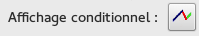
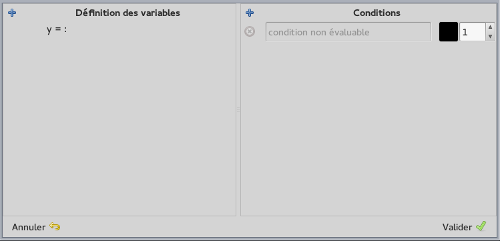
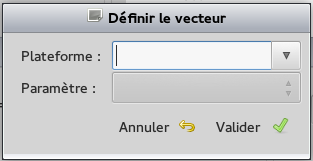
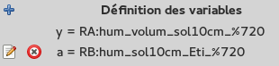
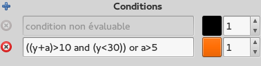
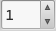

Affichage conditionnel


Définition des variables :
Une condition est une expression logique qui contient des variables. Chaque variable est identifiée par une lettre. Toutes les variables qui apparaissent dans les conditions doivent être définies. Dans tous les cas la variable y est réservée au paramètre en ordonnées. Pour les tracés de type PlotXY, la variable x est également réservée au paramètre en abscisses.
Pour définir une nouvelle variable, cliquer sur le bouton . Une boîte de saisie permet de définir la variable, de la même manière que l'on définit une donnée d'un tracé (cf § Tracé ST)


 : permet de modifier la variable par réouverture de la boîte de définition.
: permet de modifier la variable par réouverture de la boîte de définition. : permet de supprimer la variable.
: permet de supprimer la variable.
Conditions :
Une condition est une expression logique simple ou complexe. Toutes les variables utilisées dans l'expression doivent avoir été définies. On peut utiliser des fonctions mathématiques standard (cf module math de python). Voici quelques exemples de conditions valides :
y > 3
y == 3
sin(y) > 0.5
y>3 and a>3
((y+b)<10 and (y<3)) or x>5
Pour définir une nouvelle condition, cliquer sur le bouton .
Au niveau de l'ihm, chaque condition est matérialisée par une ligne :

: permet de supprimer la condition. : zone de saisie de l'expression logique.
: zone de saisie de l'expression logique.
: choix de l'épaisseur.Condition non évaluable : Pour les tracés de type ST et PlotXY Vista propose de configurer la couleur et l'épaisseur lorsque la condition ne peut pas être évaluée. Cela se produit lorsqu'une donnée de la condition est manquante.
Contrôles :
Au moment de valider les conditions, Vista réalise 2 types de contrôles :
Si des erreurs sont détectées, une boîte de message apparaît.